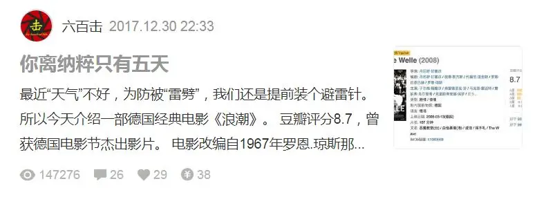
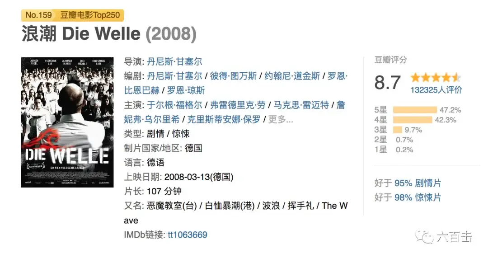
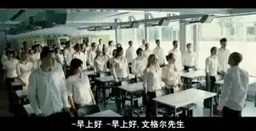
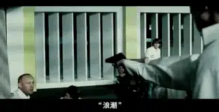

1945年5月9日，德国纳粹被迫签署了无条件投降书。
至此，曾给人类带来深重灾难的德国纳粹政府彻底崩溃了。
因此，每年的5月9日为战胜德国法西斯纪念日。
如今，73年已经过去了，德国法西斯似乎已经离我们很远。
可是，果真如此么？
1967年，罗恩.琼斯在校园做了著名的法西斯主义社会实验——第三浪潮。
它向全世界表明。
只要有条件，五天内纳粹就可以复活。
为了让大家更深地认识纳粹。
今天改造复活一篇旧文，文章在简书上的阅读量已经10w+。

1967年，罗恩.琼斯上课时，有学生向他提问：
“为什么德国人声称，对于屠杀犹太人不知情？
为什么无论农民、银行雇员、教师还是医生都声称，他们并不知道集中营里发生的惨剧？”
罗恩.琼斯不知如何回答，所以他进行了一场大胆的实验。
他要重构纳粹德国，让学生亲身体验法西斯主义。
没想到，在民主教育非常普及的美国，罗恩.琼斯只用了五天的时间就复活了纳粹。
甚至实验发展到最后，局面已经无法控制，学生们无比狂热、告密成风，实验最终不得不终止。
那么，这五天到底发生了什么？独裁是如何炼成的？
由这场实验改编的高分电影《浪潮》会给你一个后背发凉的答案。

新学期开始，学校举办了一个以“国家体制”为主题的活动周，富有才华且活力四射的体育老师赖纳.文格尔教授“独裁政治”课。
课堂上，学生们一致认为独裁政治不可能在现代德国社会重现。
赖纳心血来潮，决定组织一次活动，让学生亲身体验一下群体的易操纵性。
星期一 纪律铸造力量
赖纳首先告诉大家，独裁政府的共同点就是都有一个核心领导角色。
于是赖纳倡议大家投票选出一个这样的领导角色。
作为老师，赖纳具有天然的优势，他被选为这个班级的“元首”。
赖纳接着告诉大家，专制统治的一个重要特点是纪律性。
于是他颁布了两条重要的纪律：
1、课堂上，赖纳作为一个领导人，需要被尊称为文格尔先生。
2、没有经过允许不准发言，发言时需要站立，发言要简短精炼。
一向自由散漫、东倒西歪的学生对这种纪律性感到很新奇。
大家对这个特别的活动充满了兴趣。
星期二 团结铸造力量
第二天一上来，大家齐呼“早安，文格尔先生”。
文格尔要求大家起立原地踏步直到大家的步伐完全一致。
起初杂乱无章的步伐逐渐变得整齐划一，整个班级仿佛变成了穿着皮靴的军队，充满了气势。
文格尔兴奋地告诉大家：
“感觉所有人都融为一体，这就是集体的力量”
接着文格尔又为这种集体性的行为寻找了一个目的——那就是把楼下“无政府主义课”踩在脚下：
“让我们的敌人吃天花板上的灰”
通过树立敌人让行为合理化之后，大家的脚步不仅整齐，而且变得越来越有力量。
学生们也变得越来越兴奋。
平时看的不顺眼的同学这个时候也好像变得可爱多了。
接着文格尔重新安排座位，有意去打破小团体，他让学习好的同学和学习差的同学坐在一起。
而为了进一步增加这个集体的可识别性，文格尔提出，大家要穿统一的服装。
最终大家一致同意，白衬衣和牛仔裤作为这个集体的统一服装。
第二天的课程推高了这个集体的优越性，这些学生非常兴奋地回去找白衬衣。
而文格尔也渐入佳境，非常享受被学生顶礼膜拜的感觉。
星期三 行动铸造力量
课堂上，大家如约穿上了白衬衫，但是只有女生卡罗穿了她的红色上衣。
当她进入课堂的时候，就有一种不合群的怪异和被孤立的感觉，而另外一名自我意识强烈的莫娜已经悄然退课。
过去这些百无聊赖、精神空虚的学生完全沉浸于这种集体的快乐和力量中。
大家要继续推进这个集体朝前发展。
文格尔提议大家为这个集体起个名字，大家泉思涌流：“恐怖小组”、“梦想家俱乐部”、“海啸”、“基石”、“白色巨人”、“核心”…….
最后蒂姆提议的“浪潮”脱颖而出。
而红衣女孩卡罗的提议却无人理睬，甚至文格尔有意去忽略卡罗的举手，卡罗为她的不合群付上了代价。
这天，浪潮涌出了课堂，以前经常被人欺负没人关心的边缘人蒂姆，受到了浪潮的保护，感受到了组织的温暖。
狂热的学生们晚上进行了集会，并自发设计了浪潮的logo。
大家兴奋不已，仿佛一下子从浑浑噩噩变成了有理想、有目标的青年，而且有一帮人和你一起前进。
大家对浪潮充满了荣誉感，要把浪潮的logo贴满各个角落，仿佛要向全世界宣告“浪潮成立了”。
而一向渴望关爱但又经常被边缘的蒂姆更是疯狂地迷上了浪潮，他设计了网站，甚至，他爬到数十米的市政建筑上将浪潮的logo喷在上面。
星期四 浪潮礼
大家的激情和创造力完全被激发出来了，像希特勒的举手礼一样，大家也发明了浪潮的问候手势，右手划波浪停至胸前。

浪潮越来越壮大，甚至停自行车的地方都有浪潮的人把守，你如果不行浪潮礼，就不允许你停车。
如果你不穿白衬衣，也不允许你进入球馆。
这引起学校老师和同学的异议，红衣女孩卡罗想要群发邮件倡议大家抵制浪潮，竟然被限制了网络。
蒂姆已经完全沉浸于浪潮中，他狂热到要给文格尔做保镖。
被文格尔礼貌请出家后，蒂姆竟然在文格尔门外守了一夜。
星期五 局面失控
渐渐地，一些学生，以及文格尔的妻子安可，感觉到事情有点不太对劲。
一些觉悟的学生们想方设法试图阻止活动的继续，却被同学视为叛徒而遭到孤立甚至报复。
文格尔得知这些报复行为后，十分愤怒，对学生提出了警告，并让他们写出自己一周的心路历程，希望大家能够得到反省。
然而，水球比赛上依旧发生了暴力事件，局面开始失控。
妻子安可愤怒地告诉文格尔：你已沉浸在权力欲与成就感中无法自拔。
的确。
文格尔曾因自己与妻子的学历差距而自卑，然而在“浪潮”中他感到了前所未有的满足。
终于，妻子的愤然离去以及学生马尔科对自己对女友的暴力相待，让文格尔醒悟到事态的严重。
当晚，他群发短信给浪潮成员：
事关“浪潮”的将来，周六12点务必在学校礼堂开会。
星期六 无法挽回的悲剧
学校礼堂上，文格尔仿佛希特勒上身一样，发表了极富煽动性的演讲。
在他的感召下，大家兴奋的鼓掌，甚至有的人已经热泪盈眶，仿佛这位充满魅力的文格尔将会带领大家改变世界。
文格尔煽动大家处罚浪潮的叛徒马尔科，大家争着将马尔科揪在台上，等待文格尔发落。
文格尔忽然态度急转，反问押马尔科上台的学生：
如果我让你们把马尔科杀了，你们会杀么？
被反问的学生无言以对，甚至押马尔科上台也不是本意，只是因为文格尔命令他这么做，大家这才好像意识到刚才发生了什么。
在刚才的狂热气势下，浪潮差点要将马尔科杀死，这不正是纳粹么？
文格尔通过这样的方式让大家觉醒，他宣布浪潮结束。
可是为时已晚。
蒂姆因幻灭而精神崩溃，开枪打伤了一名同学后意图杀死文格尔。

文格尔说：
你开了枪，文格尔先生就不在了，“浪潮”就没有人来领导了。
绝望的蒂姆最终饮弹自尽
众人相拥而泣，文格尔在悲痛和震惊中被警察带走了。
真实的事件和电影《浪潮》告诉我们：
我们离纳粹只有五天
而五天还是经过比较彻底的反法西斯反思以及民主训练的美国的记录。
文格尔通过环境控制、建立权威、严厉纪律、压缩思考、导入话语系统、去个人化，利用权威卸掉成员的理性防御，通过树立敌人营造强烈的归属感和荣誉感，最终成就了浪潮。
“浪潮”何以如此轻易的实现对学生的操纵和奴役的？
正如1922年沃尔特.李普曼发出的警告：
大众绝对无知者的比例远比我们想象中的大，这些人事精神上的儿童或野蛮人，是煽动者的天然猎物。
所以浪潮中最狂热的有：
迫切需要关怀和接纳的蒂姆、急于证明自己的自卑男孩马尔科、没有掌控能力的导演丹尼斯、嫉妒红衣女孩卡罗的胖女孩以及三个叛逆少年。
浪潮给了他们面对自卑、不公的勇气和方法。
当狂热的浪潮一旦掀起，将有更多人迫于群体的压力被席卷加入、并迅速同化。
这几乎就是纳粹时期，独裁政府领导下的狂热盲从的民众的翻版。
几十年前，希特勒上台前的德国社会无比低迷和动荡：高失业率、通货膨胀、社会不公、政府公信力破产、极端民族意识抬头......
这样的环境之下，造就了无数个蒂姆、马尔科、丹尼斯。
他们迷茫不知所措，有非常大的报复心理同时也需要别人的温暖和关注，他们又常常缺乏思考和主见。
独裁政府需要的正是这样的人。
而浪潮和独裁政府的特点就是服从、团结、纪律、极强的目的性和使命感，所以这样的一个集体对于以上情形的人们来说绝对是一种诱惑。
就像勒庞在《乌合之众》里提到：
当个人是一个孤立的个体时，他有着自己鲜明的个性化特征。
而当这个人融入了群体后，他的所有个性都会被这个群体所淹没，他的思想立刻就会被群体的思想所取代。
而当一个群体存在时，他就有着情绪化、无异议、低智商等特征。
一个独裁的集体会让他们的生活立马充满了方向。
早上再也不需要思考穿这件衣服还是穿那件衣服，你只需要穿上白衬衫就好。
你不需要思考，组织会给你一个明确的意见。
同时，独裁政府具有高度的共性，当你融入其中后，会感受到组织的关怀。
你将有很大的力量去对抗那些异见分子，你会以多数人的选择就是正确的心态堂而皇之地杀犹太人、孤立红衣女孩、排斥所有不加入浪潮的人。
所以面对文格尔最后的命令，如果不是文格尔自己打住，恐怕马尔科的生命也会被浪潮吞灭，因为他们一定会服从文格尔的命令。
耶鲁大学心理学家米尔格拉姆，在完成服从试验以后，他指出：
当主导实验的的权威者命令参与者伤害一个人，即使参与者收到如此强烈的道德不安的刺激，权威者通常仍然可以命令他继续。
实验显示了成年人对于权利者有多么大的服从意愿，可以做出几乎没有任何底线的行为，我们必须尽快对这种现象进行研究和解释。
在高纪律性、高权威性的浪潮面前，个体的理性和良知一定会让位于集体的意志。
更可怕的是，独裁会把独裁者的欲望无限放大。
文格尔只是享受了五天的“元首”生活，就已经不知不觉地迷恋上了万众崇拜的感觉。
这是多么的可怕。
而要避免浪潮出现，我们一定要肯定个体的神圣权利，要善待异见者，要聆听不同的声音，要有监督和权利制衡去规避独裁的产生。
面对权威发出的不正当要求，我们更应当忠于良心和真理。
否则，我们永无自由，而浪潮的悲剧也会重演。
关注并回复：浪潮 获取电影资源
相关推荐：
你们一直在抱怨这个地方，但是你们却没有勇气走出这里
《举报者》| 别人有忏悔录，我们有厚黑学
击垮纳粹独裁的六份传单
这里没有挑逗你眼目情欲的小鲜肉
也没有挑动你肉体情欲的段子
更没有膨胀你今生骄傲的鸡血
我们只在乎那些最质朴真诚的作品
在那里我们才能恢复真正的想象力
我们也坚信这才是我们真正需要的

ID:Six_hundred_hits
长按二维码，一键关注
【六百击】
-END-
电影评论
尽情分享朋友圈

微信打赏
通道
小提示：文末广告是腾讯配送广告，内容与本号无关，但您的每次点击（无需反复点）都会给平台带来几毛收益，欢迎您点击支持六百击。